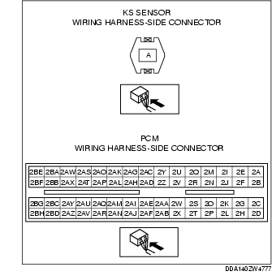

Knock sensor (KS) inspection [ZY]
- • Before performing the following inspection, make sure to follow the procedure as indicated in the troubleshooting flowchart. (See Troubleshooting Procedure.)
Resistance Inspection
1. Disconnect the knock sensor connector.
2. Measure resistance between KS terminals A and body ground.
- • If not within the specification, replace the KS. (See KNOCK SENSOR (KS) REMOVAL/INSTALLATION [ZY].)
- • If the monitor item status/specification (reference) is not within the specification, even though the KS resistance is within the specification, perform the "Circuit Open/Short Inspection".
Circuit Open/Short Inspection
1. Remove the PCM connector cover.
2. Disconnect the PCM connector. (See INTAKE-AIR SYSTEM REMOVAL/INSTALLATION [ZY].)
3. Inspect the following wiring harness for open or short circuit (Continuity inspection).

Open circuit
- • If there is no continuity, there is an open circuit. Repair or replace the wiring harness.
- - Knock sensor terminal A and PCM terminal 2AN
Short circuit
- • If there is continuity, there is a short circuit. Repair or replace the wiring harness.
- - Knock sensor terminal A and body GND
- - Knock sensor terminal A and power supply